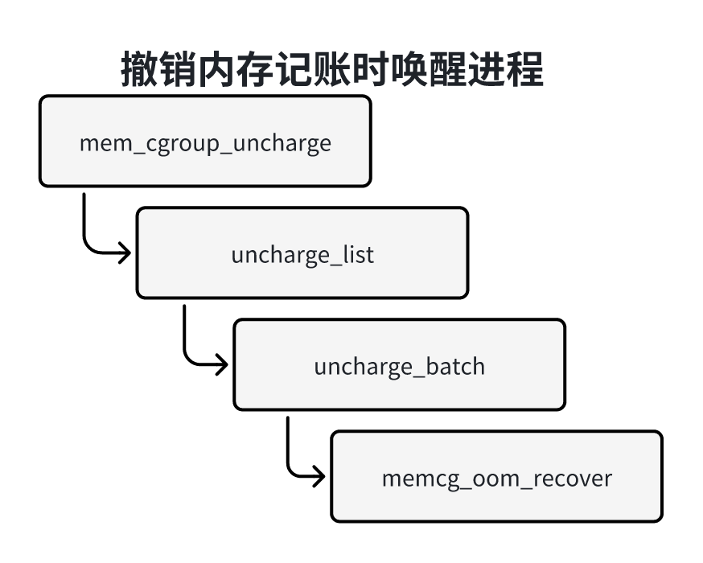

内存耗尽杀手和资源控制器
一、内存耗尽杀手
如下图所示，当内存严重不足的时候，页分配器在多次尝试直接回收页失败以后，就会调用内存耗尽啥时候（OOMKiller ）选择进程杀死，释放内存。
使用方法
内存耗尽杀手没有配置宏，可配置的参数如下：
1）/proc/sys/oom_kill_allocating_task：是否允许正在申请分配内存并触发内存耗尽的进程，避免扫描进程表选择进程，非零表示允许，0表示禁止，默认禁止。
2）/proc/sys/vm/oom_dump_tasks：是否允许内存耗尽杀手杀死进程的时候打印所有用户进程的内存使用信息，非零值表示允许，0表示禁止，默认允许。
3）/proc/sys/vm/panic_on_oom：是否允许在内存耗尽的时候哦内核恐慌（panic），重启系统。0表示禁止内核恐慌，1表示允许内核恐慌，但是如果进程通过内存策略或cpuset限制了允许使用的内存节点，这些内存节点耗尽内存，不需要重启系统，可以杀死进程，因为其他内存节点可能有空闲的内存；2表示强制执行内核恐慌，默认值是0，如果把参数painc_on_oom设置成非零值，优先级比参数oom_kill_allocatingn_task高。
内存耗尽杀手计算进程的坏蛋分数（badness score），选择坏蛋分数最高的进程，坏蛋分数的范围是0~1000，0表示总是杀死，管理员可以通过文件“/proc/
可以通过文件“/proc/
技术原理
内存耗尽杀手分为全局的内存耗尽杀手和内存控制组的内存耗尽杀手。内存控制组的内存耗尽杀手是指内存控制组的内存使用量尽量超过硬限制的时候，从内存控制组选择进程杀死，全局的内存耗尽啥时候指内存严重不足的时候，从整个系统选择进程杀死。
内存耗尽啥时候的核心函数是out_of_memory，执行流程如下图所示：
1）调用函数check_panic_on_oom，检查是否允许执行内核恐慌，如果允许，那么重启系统。
2）如果允许杀死正在申请分配内存并触发内存耗尽的进程，那么杀死当前进程。
3）调用函数select_bad_process，选择坏蛋进程。
4）调用函数oom_kill_process，杀死坏蛋进程。
函数select_bad_process负责选择坏蛋进程，遍历进程链表，调用函数oom_ecaluate_task计算进程的坏蛋分数最高的进程。
函数oom_badness负责计算进程的坏蛋分数，坏蛋分数的范围是0~1000，0表示不杀死，1000表示总是杀死，代码如下：
x1// 位置：mm/oom_kill.c2
3unsigned long oom_badness(struct task_struct *p, struct mem_cgroup *memcg,4 const nodemask_t *nodemask, unsigned long totalpages)5{6 long points;7 long adj;8
9 // 如果是不可杀死的进程，比如1号进程和内核线程，那么坏蛋分数是010 if (oom_unkillable_task(p, memcg, nodemask))11 return 0;12
13 p = find_lock_task_mm(p);14 if (!p)15 return 0;16
17 adj = (long)p->signal->oom_score_adj;18 // 如果进程的分数调整值是最小值-1000，或者进程被标记为不可杀，或者进程处于执行vfork的过程19 // 坏蛋分数为020 if (adj == OOM_SCORE_ADJ_MIN ||21 test_bit(MMF_OOM_SKIP, &p->mm->flags) ||22 in_vfork(p)) {23 task_unlock(p);24 return 0;25 }26
27 // 坏蛋分数等于（常驻内存集合的大小 + 换出的页数 + 直接页表的数量 + 页中间的目录数量）28 points = get_mm_rss(p->mm) + get_mm_counter(p->mm, MM_SWAPENTS) +29 atomic_long_read(&p->mm->nr_ptes) + mm_nr_pmds(p->mm);30 task_unlock(p);31
32 if (has_capability_noaudit(p, CAP_SYS_ADMIN))33 points -= (points * 3) / 100;34
35 // 坏蛋分数的调整值等于（物理内存的总页数 + 交换区的总页数） * 进程的分数调整至 / 100036 adj *= totalpages / 1000;37 // 将坏蛋分数加上调整值38 points += adj;39
40 // 返回坏蛋分数，如果坏蛋分数小于等于0，把坏蛋分数设置为141 return points > 0 ? points : 1;42}
函数oom_kill_process负责杀死坏蛋进程，执行流程如下：
1）如果被选中的进程有子进程，那么从所有子进程中选择坏蛋分数最高的子进程代替父进程牺牲，试图丢失的工作数量最小化。
假设一个服务器进程，每当一个客户端连接进来，创建一个子进程负责特定的客户端通信。如果杀死服务器进程，将会导致客户端无法连接进来；如果杀死一个子进程，只影响一个客户端，影响面小。
2）向北选中的进程发送杀死信号SIGKILL。
二、内存资源控制器
控制组（cgroup）的内存资源控制器用来控制一组进程的内存使用量，启用内存资源控制器的控制组简称内存控制组（memcg）。控制组把各种资源控制器称为子系统，内存资源控制器称为内存子系统。
使用方法
编译内存时需要开启一下配置宏：
1）控制组的配置宏CONFIG_CGROUPS。
2）内存资源控制器的配置宏CONFIG_MEMCG。
可选的配置宏如下：
1）内存资源控制器交换扩展（也称为交换控制器）的配置宏CONFIG_MEMCG_SWAP，控制进程使用的交换区的大小，依赖配置宏CONFIG_MEMCG和页交换的配置宏CONFIG_SWAP。
2）配置宏CONFIG_MEMCG_SWAP_ENABLED控制是否默认开启交换控制器，默认开启，依赖配置宏CONFIG_MEMCG_SWAP。
可以在引导内核时通过内核参数”swapaccount=“指定是否开启交换控制器，参数值为1，表示开启，参数值为0表示关闭。
控制组已经从版本1演进到版本2，主要改进点：
1）版本1可以创建多个层级树，版本2只有一个统一的层级树。
2）在版本2中，进程只能加入作为叶子节点的控制组（即没有子控制组），根控制组是个例外（进程默认属于根控制组）。
控制组版本1可以创建多个控制组层级树，但是每种资源控制器只能关联一个控制组层级树，内存资源控制器只能关联一个控制组层级树。
控制组版本1和版本2的内存资源控制器是互斥的：如果使用了控制组版本1的内存资源控制器就不能使用版本2的内存资源控制器。
控制组版本1的内存资源控制器
控制组版本1的内存资源控制器提供的蛀牙接口如下：
1）memory.use_hierarchy：启用分层记账，默认禁止，内存控制组启用分层记账以后，子树中的所有内存控制组的内存使用的都会被基准值拿个刀这个没存控制组。
2）memory.limit_in_bytes：设置或查看内存使用的限制（硬限制），默认值是”max“。
3）memory.soft_limit_in_bytes：设置或查看内存使用的软限制，默认值是”max“，软限制和硬限制的区别是：内存使用量可以超过软限制，但是不能超过硬限制，页回收算法会优先从内存使用超过软限制的内存控制组回收内存。
4）memory.memmsw.limit_in_bytes：设置或查看内存+交换区的使用限制，默认值是max。
5）memory.swappiness：设置或查看交换积极程度。
6）memory.oom_control：控制是否禁止内存耗尽杀手，1表示禁止，0表示启用，默认启用内存耗尽杀手。
7）memory.stat：查看内存使用的各种统计值。
8）memory.usage_in_bytes：查看当前内存使用量。
9）memory.memsw.usage_in_bytes：查看当前内存使用量。
10）memory.max_usage_in_bytes：查看记录的最大内存使用量。
11）memory.memsw.max_usage_in_bytes：查看记录的最大内存+交换区使用量。
12）memory.failcnt：查看内存使用量命中限制的次数。
13）memory.memsw.failcnt：查看内存+交换区的使用量命中限制的次数。
14）memory.kmem.limit_in_bytes：设置或查看内核内存的使用限制。
15）memory.kmem.usage_in_bytes：查看当前内核内存使用量。
16）memory.kmem.failcnt：查看内核内存使用量中限制的次数。
17）memory.kmem.max_usage_in_bytes：查看记录的最大内核内存使用量。
18）memory.kmem.tcp.limit_in_bytes：设置或查看TCP缓冲区的内存使用限制。
19）memory.kmem.tcp.usage_in_bytes：查看当前TCP缓冲区的内存使用量。
20）memory.kmem.tcp.failcnt：查看TCP缓冲区内存使用量限制的次数。
21）memory.kmem.tcp.max_usage_in_bytes：查看记录的最大TCP缓冲器内存使用量。
控制组队资源使用量没有限制，并且不允许在根控制组配置资源使用限制，进程默认属于根控制组。创建子进程的时候，子进程集成父进程加入的控制组。
控制组版本1的内存资源控制器的配置方法如下：
2111）在目录“/sys/fs/cgroup”下挂载tmpfs文件系统2 mount -t tmpfs none /sys/fs/cgroup3 42）在目录“/sys/fs/cgroup”下创建目录memory5 mkdir /sys/fs/cgroup/memory6 73）在目录“/sys/fs/cgroup/memory”下挂在crgoup文件系统， 把内存资源控制器关联到控制组8 层级树。9 mount -t cgroup -o memory none /sys/fs/cgroup/memory10 114）创建新的控制组12 mkdir 0t cgroup -o memory none /sys/fs/cgroup/memory13 145）设置内存使用的限制。例如把控制组的内存使用设置为4MB15 echo 4MB > /sys/fs/cgroup/memory/memcg0/memory.limit_in_bytes16
176）把线程加入控制组18 echo <pid> /sys/fs/cgroup/memory/mecg0/tasks19 207）也可以把线程组加入控制组，指定线程组中任意一个线程的标识符，就会把线程组的所有线程加入任务组。21 echo <pid> > /sys/fs/cgroup/memory/memcg0/cgroup.procs控制组版本2的内存资源控制器
控制组版本2的内存资源控制提供的主要接口文件如下：
1）memory.low：内存使用接线，默认值是0，用来保护一个控制组可以分配到指定数量的内存，这种保护只能尽力而为，没有绝对的保证，如果一个控制组和所有祖先的内存使用在低界限以下，并且可以从其他不受保护的控制组回收内存，那么这个控制组的内存不会被回收。
2）memory.high：内存使用最高界限，内存使用节流（throttle）限制，默认值是max，这是控制内存使用的主要机制，如果一个控制组的内存使用量超过高界限，那么这个控制组里面的所有进程将会被节流，从这个控制组回收内存。
3）memory.max：内存使用硬限制，默认值是max，如果一个控制组的内存使用量达到硬限制，将会在这个控制组中调用内存耗尽啥时候选择进程杀死。
4）memory.current：查看控制组和所有子孙的当前内存使用量。
5）memory.stat：查看内存使用的各种统计值。
6）memory.swap.max：交换区使用硬限制，默认值是max，如果一个控制组的交换区使用量达到硬i吸纳，那么不会换出这个控制组的匿名页。
7）memory.swap.current：查看控制组和所有子孙的当前交换区使用量。
根控制组队资源使用量没有限制，并且不允许在跟控制组配置资源使用限制，进程默认属于根控制组。创建子进程的时候，子进程集成父进程加入的控制组。
控制组版本1和版本2的内存资源控制器的区别如下：
1）控制组版本1的内存资源控制器默认禁止分层记账方式，可以配置；控制组版本2的内存组员控制器总是使用分层记账方式，不可配置。
2）对交换区的记账方式不同：控制组版本1使用内存+交换区记账方式，即记录内存使用量和交换区使用量的总和；控制组版本2对交换区单独记账。
3）控制组版本1的内存资源控制器more启用内存耗尽杀手，可以配置，控制组版本2的内存资源控制器总是启用内存耗尽杀手，不可配置。
控制组版本2的内存资源控制器的配置方法如下：
1811）在目录“/sys/fs/cgroup”下挂载tmpfs文件系统2 mount -t tmpfs none /sys/fs/cgroup3 42）在目录“/sys/fs/cgroup”下创建目录cgroup25 mkdir /sys/fs/cgroup/cgroup26 73）在根控制组开启内存资源控制器8 cd /sys/fs/cgroup9 echo "+memory" > cgroup.subtree_control10 114）创建新的控制组12 mkdir cgroup013 145）设置控制组的内存使用最高界限15 echo 4Mb > cgroup0/memory.high16
176）把线程加入控制组18 echo <pid> cgorup0/cgroup.procs技术原理
数据结构
内存控制组：内存资源控制器的数据结构是结构体mem_cgroup，如下图所示，主要成员如下：
成员css：结构体cgroup_subsys_state是所有资源控制器的基类，结构体mem_cgroup是它的一个派生类。
成员memory：内存计数器，记录内存的限制和当前使用量。
成员swap：控制组版本2交换区计数器，记录交换区的限制和当前使用量。
成员memsw：控制组版本1内存+交换区计数器，记录内存+交换区的限制和当前使用量。
成员kmem：控制组版本1，内核内存计数器，记录内核内存限制和当前使用量。
成员tcpmem：控制组版本1，TCP套接字缓冲区计数器，记录TCP套接字缓冲区的限制和当前使用量。
成员low：控制组版本2，内存使用的低界限。
成员high：控制组版本2，内存使用的高界限。
成员soft_limit：控制组版本1，内存使用的软限制。
成员use_hieratchy：控制是否启用分层记账。
成员swappiness：控制交换的积极程度。
成员oom_kill_disable：控制是否禁止内存耗尽杀手。
成员nodeinfo：每个内存节点对应一个mem_cgroup_per_node实例，存放内存控制组在每个内存节点上的信息。
结构体page_counter是页计数器，计数的单位是页，代码如下：
121// 位置：include/linux/page_counter.h2
3struct page_counter {4 atomic_long_t count;5 unsigned long limit;6 struct page_counter *parent;7 8 9 // 历史遗留成员10 unsigned long watermark;11 unsigned long failcnt;12}成员count：计数值。
成员limit：硬限制。
成员parent：如果父内存控制组启用分层记账，那么成员parent指向父内存控制组的页计数器，如果父内存控制组禁止分层记账，那么成员parent是空指针。
成员watermark：记录计数值的历史最大值。
成员failcnt：命中限制的次数。
结构体mem_cgroup_per_node存放内存控制组在每个内存节点上的信息，主要成员：
成员lruvec：是LRU向量，其中的LRU链表是内存控制组的私有LRU链表。当进程加入内存控制组以后，给进程分配的也不再加入内存节点的LRU链表，而是加入内存控制组的私有LRU链表。
成员usage_in_excess：是内存使用量超过软限制的数值，如果内存使用量超过软限制，成员usage_in_excess等于( mem_cgroup.memory.count - mem_cgroup.soft_limit)，否则成员usage_in_excess等于0。
成员on_tree：指示内存控制组是否在软限制树中。当内存使用量超过软限制的时候，借助成员tree_node把mem_cgroup_per_node实例加入内存节点的软限制树，软限制树是红黑树，根据内存使用量超过软限制的数值从小到大排序，树的根是soft_limit_tree.rb_tree_per_node[n]->rb_root，其中n是内存节点编号。
成员memncg：mem_cgroup_per_node实例所属的内存控制组。
进程是怎么知道属于哪个内存控制组？如下图所示，给定一个进程得到进程输数的内存控制组方法。
根据进程描述符的成员cgroups得到结构体css_set，结构体css_set是控制组子系统状态的集合。
根据css_set.subsysp[memory+cgrp_id]得到内存控制组的第一个成员css的地址。结构体css_set成员subsys指向每种资源控制器的结构体cgroup_subsys_state，其中索引为memory_cgroup_id（枚举常量）的数组元素指向内存控制组的第一个成员css。
如果css_set.subsys[memory_cgrp_id]是空指针，说明进程没有加入内存控制组，默认属于根内存控制组，全局变量root_mem_cgroup指向内存控制组。
如果css_set.subsys[memory_cgrp_id]不是空指针，把地址减去结构体mem_cgroup中成员css的偏移，就是内存控制组的地址。
内存描述符怎么知道它属于哪个内存控制组？内存描述符成员owner指向进程描述符。如果进程属于线程组，那么成员owner指向线程组组长的进程描述符。
91// 位置：include/linnux/mem_types.h2
3struct mm_struct {4 ...5 6 struct task_struct __rcu *owner;7 8 ...9};首先 根据成员owner得到进程描述符，然后得到进程所属的内存控制组。
怎么知道物理页属于哪个内存控制组？如下图所示，如果将进程加入内存控制组，给进程分配的物理页的页描述符的成员mem_cgroup指向内存控制组。
交换槽位到内存描述符组的映射：把一个页换出到交换区的时候，需要把内存控制组的交换区使用量加1，并且保存交换槽位到页所属的内存控制组的映射关系。
访问页的时候，把页从交换区换入交换缓存，需要把内存控制组的内存使用量+1，释放交换槽位的时候，需要把内存控制组的交换区使用量-1，必须使用页在换出时所属的内存控制组，不能使用进程所属的内存控制组。
为什么换入页时要使用换出时页所属的内存控制组？
假设进程1和进程2共享一个交换支持的页，把进程1加入内存控制组cg1，进程2属于内存控制组cg2，假设物理页是由进程1申请分配的，所以页属于内存控制组cg1，把页换出到交换区的时候，把内存控制组cg1的交换区使用量加1，把内存使用量减1。
假设在换出页以后进程2先访问页，把页从交换区换入，如果使用进程2所属的内存控制组，那么页属于内存控制组cg2，把内存控制组cg2的内存使用量加1，释放交换槽位的时候，把内存控制住cg2的交换区使用量减1，这就出现问题了：换出页时把内存控制组cg1的交换区使用量加1，换入页以后，释放交换槽位的时候，把内存控制组cg2的交换区使用量减1。
所以在换入页的时候使用换出时所属的内存控制组，换出时需要保存交换槽位到页所属的内存控制组的映射关系。
如下图所示，内核定义了数组swap_cgroup_ctrl，每个数组项指向一个交换区的swap_cgroup_ctrl实例，交换区的每个槽位对应一个swap_cgroup实例。
swap_cgroup_ctrl主要成员：
成员map：指向页描述符指针数组，每个数组项指向交换槽位的swap_cgroup实例所在的物理页的页描述符。
成员length：页描述符的指针数组的大小，也就是一个交换区需要多少个物理页来存放槽位的swap_cgroup实例，等于（交换区的总页数 / SC_PER_PAGE）宏SC_PER_PAGE是一个物理页可以容纳的swap_cgroup实例数量。
swap_cgroup实例的成员id是换出页所属的内存控制组的标识符，代码如下：
51// 位置：mm/swap_cgroup.c23struct swap_cgroup{4unsigned short id;5};获取交换槽位对应的内存控制组的方法如下：
1）根据交换区索引得到swap_cgroup_ctrl实例。
2）mappage = ctrl -> map[offset / SC_PER_PAGE]，得到交换槽位的swap_cgroup实例所在的物理页的页描述符，其中offset是交换区的偏移量。
3）sc = page_address(mappage)，得到交换槽位的swap_cgroup实例所在的物理页的内核虚拟地址。
4）交换槽位的swap_cgroup实例的地址等于（sc + offset % SC_PER+PAGE）。
5）从交换槽位的swap_cgroup实例的成员id得到内存控制组的标识符。
6）在全局标识符到内存控制组的映射mem_cgroup_idr中根据标识符得到mem_cgroup实例。
分层记账
在一个内存控制组启用分层记账以后，子树中的所有内存控制组的内存使用都会被记账到这个内存控制组。
在一个内存控制组启用或禁止分层记账的时候，要求它没有子树，如果一个内存控制组启用了分层记账，创建子内存控制组的时候，子内存控制组自动启用分层记账，并且不允许管理员禁止分层记账。
如下如图所示，假设有3个内存控制组：：a、b和c，b是a的孩子，c是b的孩子，a禁止分层记账，b和c启用分层记账，那么c的内存使用会被记账的所有启用分层记账的祖先，即会被记账到b，但是不会被记账到a。以内存控制组中的内存计数器为例，页计数器之间的关系：
1）b的内存计数器的成员parent是空指针。
2）c的内存计数器的成员parent指向b内存计数器。
如果内存控制组c申请分配了一个物理页，那么c和b的内存计数器都会加1，a的内存计数器不会加1。
内存记账
内存记账charge是指分配物理内存的时候记录内存控制组的内存使用量，主要一下4种情况：
1）第一次访问匿名页时分配物理页。
2）访问文件时分配物理页。
3）执行写时复制，分配物理页。
4）从交换区换入页。
如下图所示，第一次范根匿名页时生成页错误异常，函数do_anonymous_page负责处理匿名页的页错误异常，主要步骤如下：
1）分配物理页。
2）调用函数mem_cgroup_try_charge以记账。
3）锁住页表。
4）如果直接页表是空表项，那么调用函数mem_cgroup_commit_charge以提交记账，然后设置页表项。
5）如果直接页表项不是空表项，说明其他处理器已经分配并映射到物流页，那么当前处理器放弃处理，调用函数mem_cgroup_cancel_charge以放弃记账。
6）释放页表锁。
如下图所示，访问文件的某一页时，如果文件页不在内存中，那么把文件页读到内存中。函数add_to_page_cache_lru负责把文件页添加到文件的缓存中，主要步骤如下：
1）调用函数mem_cgroup_try_charge以记账。
2）把页添加到文件的页缓存中。
3）如果添加成功，调用函数mem_cgroup_commit_charge以提交记账。
4）如果添加失败，调用函数mem_cgroup_cancel_charge以放弃记账。
如下图所示，写只读页时生成页错误异常，函数do_wp_page负责执行写时复制，主要步骤如下：
1）分配物理页。
2）调用函数mem_cgroup_try_charge以记账。
3）锁住页表。
4）如果直接页表表项和锁住页表项之前相同，那么调用函数mem_cgroup_commit_charge以提交记账，然后设置页表项。
5）如果直接页表项和锁住页表项之间不同，说明其他处理器已经执行写时复制，那么当前处理器放弃处理，调用函数mem_cgroup_cancel_charge以放弃记账。
6）释放页表项。
如下图所示，访问已换出到交换区时生成页错误异常，函数do_swap_page负责从交换区换入页，主要步骤如下：
1）在交换缓存中查找页。
2）如果页不在交换缓存中，那么从交换区换入页。
3）调用函数mem_cgroup_try_charge以记账。
4）锁住页表。
5）如果直接页表项和锁住页表之前相同，那么设置页表项，然后调用函数mem_cgroup_commit_charge以提交记账。
6）如果直接页表页和锁住页表之前不同，说明其他处理器已经换入页，那么当前处理器放弃处理，调用函数mem_cgroup_cacen_charge以放弃记账。
7）释放页表项锁。
可以看出，内存记账分为两步：
1）调用函数mem_cgroup_try_charge以记账，把内存控制组的内存计数加上贮备记账的页数。
2）如果成功，调用函数mem_cgroup_commit_charge以提交记账，如果失败，调用函数mem_cgroup_cancel_charge以放弃记账。
为了减少处理器之间的竞争，提高内存记账的速度，为每个处理器定义一个记账缓存，代码如下：
111// 位置：mm/memcontrol.c2
3struct memcg_stock_pcp{5 struct mem_cgroup *cached;6 unsigned int nr_pages;7 struct work_struct work;8 unsigned long flags;9};11static DEFINE_PER_CPU(struct memcg_stock_pcp, memcg_stock);每处理器记账缓存一次从内存控制组批量申请32页，把内存控制组的内存使用量加上32页。结构体memcg_stock_pcp的成员cached记录内存控制组，成员nr_pages是预留页数。
在内存控制组记账的时候，先查看当前处理器的记账换出。如果记账缓存保存的内存控制组正在准备记账的内存控制组，并且预留页数大于等于准备记账的页数，那么把预留页减去贮备记账的页数。
函数mem_cgroup_try_charge
函数mem_cgroup_try_charge尝试记账一个页，检查内存控制组的内存使用量是否超过限制。如果没有超过限制，就把页记账到内存控制组。该函数有5个参数：
struct page *page：准备记账的页。
struct mm_struct *mm：指向申请物理页的进程的内存描述符。
gfp_t gfp_mask：申请分配物理页的掩码。
struct mem_cgroup **memcgp：输出参数，返回记账的内存控制组。
bool compound：指示复合页按一页记账还是按单页数量记账。
返回值：如果内存控制组的内存使用量没有超过限制，那么该函数返回0，参数memcgp返回记账的内存控制组，否则返回错误码。
代码如下：
521// 位置：mm/memcontrol.c2
3int mem_cgroup_try_charge(struct page *page, struct mm_struct *mm,4 gfp_t gfp_mask, struct mem_cgroup **memcgp,5 bool compound)6{7 struct mem_cgroup *memcg = NULL;8 unsigned int nr_pages = compound ? hpage_nr_pages(page) : 1;9 int ret = 0;10
11 // 如果禁用内存控制组直接返回012 if (mem_cgroup_disabled())13 goto out;14
15 // 如果页在交换缓存中，16 if (PageSwapCache(page)) {17 // 如果页已经关联内存控制组，直接返回018 VM_BUG_ON_PAGE(!PageLocked(page), page);19 if (page->mem_cgroup)20 goto out;21
22 // 如果启用交换区记账23 if (do_swap_account) {24 // 从页描述符的成员private得到交换项25 swp_entry_t ent = { .val = page_private(page), };26 // 在交换槽位到内存控制组的映射中根据交换项得到内存控制组的标识符27 unsigned short id = lookup_swap_cgroup_id(ent);28
29 rcu_read_lock();30 // 根据标识符查找内存控制组31 memcg = mem_cgroup_from_id(id);32 // 如果内存控制组没有被删除，把引用计数加133 if (memcg && !css_tryget_online(&memcg->css))34 memcg = NULL;35 rcu_read_unlock();36 }37 }38
39 // 如果页不在交换缓存中，或者发现内存控制组被删除，那么查询进程所属的内存控制组40 if (!memcg)41 memcg = get_mem_cgroup_from_mm(mm);42
43 // 主要工作委托给函数try_charge44 ret = try_charge(memcg, gfp_mask, nr_pages);45
46 // 把内存控制组的引用计数减147 css_put(&memcg->css);48out:49 // 参数memcgp返回记账的内存控制组50 *memcgp = memcg;51 return ret;52}函数try_charge 主要代码：
1311// 位置：mm/memcontrol.c2
3static int try_charge(struct mem_cgroup *memcg, gfp_t gfp_mask,4 unsigned int nr_pages)5{6 unsigned int batch = max(CHARGE_BATCH, nr_pages);7 int nr_retries = MEM_CGROUP_RECLAIM_RETRIES;8 struct mem_cgroup *mem_over_limit;9 struct page_counter *counter;10 unsigned long nr_reclaimed;11 bool may_swap = true;12 bool drained = false;13
14 // 如果进程属于根控制组，因为根控制组对内存使用量没有控制，所以不需要记账15 if (mem_cgroup_is_root(memcg))16 return 0;17retry:18 // 如果当前处理器的记账缓存从准备记账的内存控制组预留的页数足够多，那么从记账缓存减去准备记账的页数19 if (consume_stock(memcg, nr_pages))20 return 0;21
22 // 第一次尝试记账的页数量是批量值和参数nr_pages的较大值。23 // 如果没有启用内存+交换区记账，或者内存控制组和所有启用分层记账的祖先的内存+交换区使用量没有超过限制，24 if (!do_memsw_account() ||25 page_counter_try_charge(&memcg->memsw, batch, &counter)) {26 27 // 如果内存控制组和所有启用分层记账的祖先的内存使用量没有超过限制，那么把内存控制组的引用计数28 // 加上记账的页数，把记账的多余页数保存到当前处理器的记账缓存=染回返回029 if (page_counter_try_charge(&memcg->memory, batch, &counter))30 goto done_restock;31 32 // 如果内存控制组和所有启用分层记账的祖先的内存使用量没有超过限制，那么把内存控制组33 // 的引用技术啊加上记账的页数，把记账的多余页数保存到当前处理器的记账缓存+交换区记账34 if (do_memsw_account())35 page_counter_uncharge(&memcg->memsw, batch);36 37 // 记录内促使用量超过限制的内存控制组38 mem_over_limit = mem_cgroup_from_counter(counter, memory);39 } else {40 41 // 如果启用了内存+交换区记账，并且内存控制组或其中一个启用分层记账的祖先的内存+交换区使用量超过限制42 // 那么记录内存+交换区使用量超过限制的内存控制组43 mem_over_limit = mem_cgroup_from_counter(counter, memsw);44 may_swap = false;45 }46
47 // 如果批量值大于准备记账的实际页数，那么使用实际页数重新尝试记账。48 if (batch > nr_pages) {49 batch = nr_pages;50 goto retry;51 }52 ....53 mem_cgroup_event(mem_over_limit, MEMCG_MAX);54
55 // 从超过限制的内存控制组回收内存56 nr_reclaimed = try_to_free_mem_cgroup_pages(mem_over_limit, nr_pages,57 gfp_mask, may_swap);58
59 // 如果回收内存以后，限制和使用量差值大于或等于准备记账的页数，重新尝试记账60 if (mem_cgroup_margin(mem_over_limit) >= nr_pages)61 goto retry;62
63 // 把每处理器记账缓存预留的页数归还给内存控制组，跳转到第14行代码，重新尝试记账64 if (!drained) {65 drain_all_stock(mem_over_limit);66 drained = true;67 goto retry;68 }69
70 // 如果申请页时不允许重试，那么跳转到nomem执行71 if (gfp_mask & __GFP_NORETRY)72 goto nomem;73
74 // 如果从超过限制的内存控制组回收的页数大于0，并且准备记账的页数没有超过8，重新尝试记账75 if (nr_reclaimed && nr_pages <= (1 << PAGE_ALLOC_COSTLY_ORDER))76 goto retry;77
78 if (mem_cgroup_wait_acct_move(mem_over_limit))79 goto retry;80
81 // 最多运行执行5次，如果重试次数不是0，那么重试尝试次数减1，然后重新尝试记账82 if (nr_retries--)83 goto retry;84
85 // 如果申请页时不允许失败，那么强制记账，允许内存使用量超过限制86 if (gfp_mask & __GFP_NOFAIL)87 goto force;88
89 if (fatal_signal_pending(current))90 goto force;91
92 mem_cgroup_event(mem_over_limit, MEMCG_OOM);93
94 // 调用函数mem_cgroup_oom 把进程设置为内存控制组内存耗尽状态95 mem_cgroup_oom(mem_over_limit, gfp_mask,96 get_order(nr_pages * PAGE_SIZE));97nomem:98 // 如果申请页是允许失败，那么返回ENOMEM99 if (!(gfp_mask & __GFP_NOFAIL))100 return -ENOMEM;101force:102
103 // 如果申请页时不允许失败，那么强制记账，允许内存使用量超过限制。104 page_counter_charge(&memcg->memory, nr_pages);105 if (do_memsw_account())106 page_counter_charge(&memcg->memsw, nr_pages);107 // 把内存控制组的引用计数加上记账的页数108 css_get_many(&memcg->css, nr_pages);109
110 return 0;111
112done_restock:113 css_get_many(&memcg->css, batch);114 if (batch > nr_pages)115 refill_stock(memcg, batch - nr_pages);116
117 do {118 if (page_counter_read(&memcg->memory) > memcg->high) {119 /* Don't bother a random interrupted task */120 if (in_interrupt()) {121 schedule_work(&memcg->high_work);122 break;123 }124 current->memcg_nr_pages_over_high += batch;125 set_notify_resume(current);126 break;127 }128 } while ((memcg = parent_mem_cgroup(memcg)));129
130 return 0;131}函数mem_cgroup_commit_charge
主要负责提交记账有4个参数：
struct page *page：需要记账的也。
struct mem_cgroup *memcg：记账的内存控制组。
bool lrucare：指示需要记账的也是不是可能在LRU链表中。
bool compound：指示复合页按一页记账还是按单位数量记账。
函数mem_cgroup_commit_charge把主要工作委托给了commit_charge，主要代码如下：
211// 位置：mm/memcgontrol.c2
3static void commit_charge(struct page *page, struct mem_cgroup *memcg,4 bool lrucare)5{6 int isolated;7
8 VM_BUG_ON_PAGE(page->mem_cgroup, page);9
10 // 如果页在其他内存控制组的私有LRU链表中，那么把页从LRU链表中删除11 if (lrucare)12 lock_page_lru(page, &isolated);13
14 // 在页描述符中记录记账的内存控制组15 page->mem_cgroup = memcg;16
17 // 如果以前页在LRU链表中，那么把页添加到记账的内存控制组的私有LRU链表中18 if (lrucare)19 unlock_page_lru(page, isolated);20}21
函数mem_cgroup_cancel_charge
主要负责放弃记账，把主要工作委托给了cacel_charge，主要代码如下：
181// 位置：mm/memcontrol.c2
3static void cancel_charge(struct mem_cgroup *memcg, unsigned int nr_pages)4{5
6 // 如果是根控制组，因为根控制组对内存使用量没有限制，不需要记账，所以不需要放弃记账7 if (mem_cgroup_is_root(memcg))8 return;9 // 把内存控制组和所有启用分层记账的祖先的内存使用量减去记账的页数10 page_counter_uncharge(&memcg->memory, nr_pages);11 12 // 如果启用了内存+交换区记账，那么把内存控制组和所有启用分层记账的祖先的内存+交换区使用量减去记账的页数13 if (do_memsw_account())14 page_counter_uncharge(&memcg->memsw, nr_pages);15
16 // 把内存控制组的引用计数减去记账的页数17 css_put_many(&memcg->css, nr_pages);18}撤销内存记账
如下图所示，调用函数put_page释放页的时候，把页的引用计数减1，只有页的引用计数变成0，才会真正释放页，调用函数mem_cgroup_uncharge以撤销内存记账。
函数mem_cgroup_uncharge把主要工作委托给了uncharge_batch，函数unchage_batch主要代码如下：
411// 位置：mm/memcontrol.c2// mem_cgroup_uncharge()->uncharge_list()->uncharge_batch()3
4static void uncharge_batch(struct mem_cgroup *memcg, unsigned long pgpgout,5 unsigned long nr_anon, unsigned long nr_file,6 unsigned long nr_kmem, unsigned long nr_huge,7 unsigned long nr_shmem, struct page *dummy_page)8{9 unsigned long nr_pages = nr_anon + nr_file + nr_kmem;10 unsigned long flags;11
12 if (!mem_cgroup_is_root(memcg)) {13 // 把内存控制组和所有启用分层记账的祖先的内存使用量减去释放的页数14 page_counter_uncharge(&memcg->memory, nr_pages);15 16 // 如果启用了内存+交换区记账，那么把内存控制组和所有启用分层记账的祖先的内存+交换区使用量减去释放的页数17 if (do_memsw_account())18 page_counter_uncharge(&memcg->memsw, nr_pages);19 20 // 如果是版本1的内存控制组，并且释放了内核内存页，那么把内存控制组所有启用分层记账的21 // 祖先的内核内存使用量减去释放的内核内存页数。22 if (!cgroup_subsys_on_dfl(memory_cgrp_subsys) && nr_kmem)23 page_counter_uncharge(&memcg->kmem, nr_kmem);24 // 唤醒因为内存控制组内存耗尽而正在睡眠等待的进程，崇信县夯实申请分配页25 memcg_oom_recover(memcg);26 }27
28 local_irq_save(flags);29 __this_cpu_sub(memcg->stat->count[MEMCG_RSS], nr_anon);30 __this_cpu_sub(memcg->stat->count[MEMCG_CACHE], nr_file);31 __this_cpu_sub(memcg->stat->count[MEMCG_RSS_HUGE], nr_huge);32 __this_cpu_sub(memcg->stat->count[NR_SHMEM], nr_shmem);33 __this_cpu_add(memcg->stat->events[PGPGOUT], pgpgout);34 __this_cpu_add(memcg->stat->nr_page_events, nr_pages);35 memcg_check_events(memcg, dummy_page);36 local_irq_restore(flags);37
38 if (!mem_cgroup_is_root(memcg))39 // 把内存控制组的引用计数减去释放的页数40 css_put_many(&memcg->css, nr_pages);41}交换区记账
交换区记账是指把页换出到交换区的时候记录内存控制组的交换区使用量。
如下图所示，函数shrink_page_list把匿名页换出到交换区，主要步骤：
调用函数add_to_swap，把页添加到交换缓存中，处理如下：
从交换区分配槽位。
调用函数mem_cgroup_try_charge_swap以还行交换区记账。
把页添加到交换缓存中。
从 页表中删除映射。
把页写到交换区。
调用函数__remove_mapping，处理如下：
调用函数mem_cgroup_swapout，针对内存+交换区记账方式撤销内存记账。
把页从交换缓存中删除。
释放物理内存。
函数mem_cgroup_try_charge_swap
主要负责执行交换区记账，有两个参数：
struct page *page：换出的页。
swp_entry_t entry：交换项，包含交换区的索引和偏移。
返回值：如果内存控制组的交换区使用量没有超过限制，返回0。
361// 位置：mm/memcontrol.c2
3int mem_cgroup_try_charge_swap(struct page *page, swp_entry_t entry)4{5 struct mem_cgroup *memcg;6 struct page_counter *counter;7 unsigned short oldid;8
9 // 如果是版本1的内存控制组，或者么有启用交换区记账，那么返回010 if (!cgroup_subsys_on_dfl(memory_cgrp_subsys) || !do_swap_account)11 return 0;12
13 memcg = page->mem_cgroup;14
15 // 如果页没有关联内存控制组，那么返回016 if (!memcg)17 return 0;18
19 // 如果内存控制组被删除，那么选择最亲近的祖先20 memcg = mem_cgroup_id_get_online(memcg);21
22 // 如果不是根控制组，并且内存控制组和所有启用分层记账的祖先的交换区使用量没有超过限制23 // 那么把内存控制组和所有启用分层记账的祖先的交换区使用量加124 if (!mem_cgroup_is_root(memcg) &&25 !page_counter_try_charge(&memcg->swap, 1, &counter)) {26 mem_cgroup_id_put(memcg);27 return -ENOMEM;28 }29
30 // 保存交换槽位到内存控制组的映射31 oldid = swap_cgroup_record(entry, mem_cgroup_id(memcg));32 VM_BUG_ON_PAGE(oldid, page);33 mem_cgroup_swap_statistics(memcg, true);34
35 return 0;36}函数mem_cgroup_swapout
主要负责针对内存+交换记账方式撤销内存记账。如果没有启用内存+交换区记账，只使用内存记账，可以在释放页的时候撤销记账。如果启用了内存+交换区记账，把一页换出到交换区，内存使用量减1，交换区使用量加1，内存+交换区的使用量不变，如果等到释放也得时候撤销记账，则会把内存使用量和内存+交换区使用量都减1，这种做法显然是错误的，所以需要再释放页之前做特殊处理。
主要代码：
501// 位置：mm/memcontrol.c2
3void mem_cgroup_swapout(struct page *page, swp_entry_t entry)4{5 struct mem_cgroup *memcg, *swap_memcg;6 unsigned short oldid;7
8 VM_BUG_ON_PAGE(PageLRU(page), page);9 VM_BUG_ON_PAGE(page_count(page), page);10
11 // 如果没有启用内存+交换区记账，直接返回，等到释放页的时候撤销内存记账12 if (!do_memsw_account())13 return;14
15 memcg = page->mem_cgroup;16
17 // 如果页没有内存控制组直接返回18 if (!memcg)19 return;20
21 // 如果内存控制组memcg被删除，就选择最亲近的祖先swap_memcg22 swap_memcg = mem_cgroup_id_get_online(memcg);23 // 保存交换槽位到内存控制组swap_memcg的映射24 oldid = swap_cgroup_record(entry, mem_cgroup_id(swap_memcg));25 VM_BUG_ON_PAGE(oldid, page);26 mem_cgroup_swap_statistics(swap_memcg, true);27
28 // 把页和内存控制组解除关系29 page->mem_cgroup = NULL;30
31 // 把内存控制组memcg和所有启用分层记账的祖先的内存使用量减132 if (!mem_cgroup_is_root(memcg))33 page_counter_uncharge(&memcg->memory, 1);34
35 // 如果memcg和swap_memcg不是同一个内存控制组，那么把内存控制组swap_memcg的内存+交换区使用量36 // 加1，把内存控制组memcg的内存+交换区使用量减1。37 if (memcg != swap_memcg) {38 if (!mem_cgroup_is_root(swap_memcg))39 page_counter_charge(&swap_memcg->memsw, 1);40 page_counter_uncharge(&memcg->memsw, 1);41 }42
43 VM_BUG_ON(!irqs_disabled());44 mem_cgroup_charge_statistics(memcg, page, false, -1);45 memcg_check_events(memcg, page);46
47 // 把内存控制组memcg的引用计数减148 if (!mem_cgroup_is_root(memcg))49 css_put(&memcg->css);50}撤销交换区记账
如下图所示，释放交换区槽位的时候撤销交换区记账的函数mem_cgroup_uncharge_swap。
代码如下：
321// 位置：mm/memcontrol.c2
3void mem_cgroup_uncharge_swap(swp_entry_t entry)4{5 struct mem_cgroup *memcg;6 unsigned short id;7
8 // 如果没有启用交换区记账直接返回9 if (!do_swap_account)10 return;11
12 // 在交换槽位到内存控制组的映射中根据交换项查询，返回内存控制组的标识符，并且删除映射13 id = swap_cgroup_record(entry, 0);14 rcu_read_lock();15 // 根据内存控制组标识符查找内存控制组16 memcg = mem_cgroup_from_id(id);17 if (memcg) {18 // 如果内存控制组存在，并且不是根控制组19 if (!mem_cgroup_is_root(memcg)) {20 // 如果是版本2的内存控制组，那么把内存控制组中和所有启用分层记账的祖先的交换区使用量减121 if (cgroup_subsys_on_dfl(memory_cgrp_subsys))22 page_counter_uncharge(&memcg->swap, 1);23 // 如果是版本1的内存控制组，那么把内存控制组和所有启用分层记账的内存+交换区使用量减124 else25 page_counter_uncharge(&memcg->memsw, 1);26 }27 mem_cgroup_swap_statistics(memcg, false);28 // 释放内存控制组的标识符29 mem_cgroup_id_put(memcg);30 }31 rcu_read_unlock();32}版本1的内存使用限制
版本1的内存控制组支持两个限制。
1）软限制（soft limit）：内存使用量可以超过软限制，页回收算法会优先从内存使用量超过软限制的内存控制组回收内存。
2）硬限制（hard limit）：内存使用量可以超过软限制，如果超过硬限制，处理方法是：如果启用内存耗尽杀手，那么使用内存耗尽杀手从内存控制组选择进程杀死；如果禁止内存耗尽杀手，那么进程睡眠，直到内存使用量小于硬限制。
如下图所示，提交内存记账的时候，检查内存使用量是否超过软限制。为了避免频繁检查，对检查软限制进行限速：每当记账和撤销记账1024页时检查一次软限制。函数mem_cgroup_update_tree检查内存控制组和所有启用分层记账的祖先，如果内存控制组的内存使用量超过软限制，那么把内存控制组添加到当前记账的物流业的内存节点的软限制树，软限制树按内存使用量和软限制的差值从小到大排序。
如下图所示，页分配器在内存严重不足的时候直接回收页，如果是全局回收（即不是从指定的内存控制组回收内存），那么优先从内存使用量超过软限制的内存控制组回收内存。
函数mem_cgroup_soft_limit_reclaim负责从超过软限制的内存控制组回收内存，代码如下：
681// 位置： mm/memcontrol.c2
3unsigned long mem_cgroup_soft_limit_reclaim(pg_data_t *pgdat, int order,4 gfp_t gfp_mask,5 unsigned long *total_scanned)6{7 unsigned long nr_reclaimed = 0;8 struct mem_cgroup_per_node *mz, *next_mz = NULL;9 unsigned long reclaimed;10 int loop = 0;11 struct mem_cgroup_tree_per_node *mctz;12 unsigned long excess;13 unsigned long nr_scanned;14
15 // 如果申请分配的页数超过1，直接返回16 if (order > 0)17 return 0;18
19 // 获取目标内存节点的软限制树20 mctz = soft_limit_tree_node(pgdat->node_id);21
22 if (!mctz || RB_EMPTY_ROOT(&mctz->rb_root))23 return 0;24
25 do {26 // 如果是第一次回收，那么从软限制树取超过软限制最多的内存控制组；否则获取下次回收的内存控制组 27 if (next_mz)28 mz = next_mz;29 else30 mz = mem_cgroup_largest_soft_limit_node(mctz);31 if (!mz)32 break;33
34 nr_scanned = 0;35 reclaimed = mem_cgroup_soft_reclaim(mz->memcg, pgdat,36 gfp_mask, &nr_scanned);37 nr_reclaimed += reclaimed;38 *total_scanned += nr_scanned;39 spin_lock_irq(&mctz->lock);40 // 把内存控制组从软限制树中删除41 __mem_cgroup_remove_exceeded(mz, mctz);42
43 next_mz = NULL;44 45 // 如果回收的页数是0，那么从软限制树取超过限制最多的内存控制组作为下一次回收的内存控制组46 if (!reclaimed)47 next_mz = __mem_cgroup_largest_soft_limit_node(mctz);48
49 // 计算内存使用量和软限制的差值，如果大于0，把内存控制组重新插入软限制树50 excess = soft_limit_excess(mz->memcg);51 52 __mem_cgroup_insert_exceeded(mz, mctz, excess);53 spin_unlock_irq(&mctz->lock);54 css_put(&mz->memcg->css);55 loop++;56
57 // 如果回收的页数是0，并且软限制树没有其他内存控制或者已经尝试回收3次，那么放弃58 if (!nr_reclaimed &&59 (next_mz == NULL ||60 loop > MEM_CGROUP_MAX_SOFT_LIMIT_RECLAIM_LOOPS))61 break;62 63 // 如果回收的页数是0， 重新尝试回收内存64 } while (!nr_reclaimed);65 if (next_mz)66 css_put(&next_mz->memcg->css);67 return nr_reclaimed;68}版本2的内存使用限制
版本2的内存控制组支持3个限制。
1）低界限（low）：用来保护一个控制组可以分配到指定数量的内存，这种保护只能尽力而为，没有绝对的保证，如果一个控制组和所有祖先的内存使用量在低界限以下，并且可以从其他不受保护的控制组回收内存，那么这个控制组的内存不会被回收。
2）高界限（high）：这是控制内存使用的主要机制，如果一个控制组的内存使用量超过高界限，那么这个控制组里面的所有进程将会被节流，从这个控制组回收内存。
3）硬限制（limit）：内存使用量不可以超过硬限制，如果超过硬限制，使用内存耗尽杀手从内存控制组选择进程杀死。
低界限
如下图所示，直接税后页分为两轮：
第一轮sc->memc_low_reclaim设置成0，不允许从内存使用量小于低界限的内存控制组回收页。
函数shrink_node遍历内存控制组层级树，如果一个内存控制组和所有祖先的内存使用量小于号低界限，并且不允许从内存使用量小于低界限的内存控制组，那么把sc->memcg_low_reclaim。
如果第一轮跳过了内存使用量小于低界限的内存控制组，那么把sc->memcg_low_reclaim设置成1，允许从内存使用量小于低界限的内存控制组回收页，调用函数shrink_zones执行第二轮回收。
高界限
如下图所示，执行内存记账的时候，检查内存控制组和所有祖先的内存使用量是否超过高界限。如果其中一个内存控制组超过高界限，那么延后执行从内存控制组回收页，具体试下如下：
如果在终端（包括硬中断和软中断）上下文中，那么项工作队列添加1个工作项。
如果在进程上下文中，那么进程描述符的成员memcg_nr_pages_over_high记录超过高界限的页数，然后给进程的thread_info.flags设置标志_TIF_NOTIFY_RESUME，等进程准备从内核模式返回用户模式的时候处理。
如下图所示，进程准备从内核模式返回用户模式的时候，发现进程的thread_info.flags设置了标志_tIF_NOTIFY_RESUME，机会调用函数mem_cgroup_handler_over_high，从当前进程所属的内存控制组回收超过高限制的页。

函数mem_cgroup_handle_over_high把主要工作委托给函数reclaim_high，函数reclaim_high代码如下：
131// 位置：mm/memcontrol.c2
3static void reclaim_high(struct mem_cgroup *memcg,4 unsigned int nr_pages,5 gfp_t gfp_mask)6{7 do {8 if (page_counter_read(&memcg->memory) <= memcg->high)9 continue;10 mem_cgroup_event(memcg, MEMCG_HIGH);11 try_to_free_mem_cgroup_pages(memcg, nr_pages, gfp_mask, true);12 } while ((memcg = parent_mem_cgroup(memcg)));13}检查当前进程所属的内存控制组和所有祖先，如果内存控制组的内存使用量超过高界限，就调用函数try_to_free_mem_cgroup_pages，从内存控制组回收超过高界限的页。
在终端上下文中添加的工作项的处理函数是high_work_func，该函数主要工作委托给了reclaim_high。
硬限制
当内存控制组的内存使用量超过硬限制的时候，首先尝试从内存控制组直接回收页，如果回收页失败，采取下面的措施：
如果申请分配页的时候指定了分配标志__GFP_NOFAIL，不允许分配失败，那么强行突然硬限制。
版本1的内存控制组支持启用或禁止内存耗尽杀手，如果启用内存耗尽杀手，那么使用内存耗尽杀手从内存控制组选择进程杀死，如果禁止内存耗尽杀手，那么进程睡眠，直到内存使用量小于硬限制。
版本2的内存控制组总是启用内存耗尽杀手，使用内存耗尽啥时候从内存控制组选择进程杀死。
注意：内存控制组内存耗尽和内存耗尽不同：内存控制组内存耗尽是因为内存控制组的内存使用量超过硬限制，系统内存耗尽是因为内存严重不足。
在页错误异常处理程序中，进程申请分配物理页，如果进程所属的内存控制组的内存使用超过硬限制，处理流程如下图所示：
如果页错误异常是由用户模式生成的，那么调用函数mem_cgroup_oom_enable，把进程描述符的成员memcg_may_oom设置为1，表示云溪内存控制组处理内存耗尽。
进程申请分配物理页，执行内存记账。如果内存控制组或某个祖先的内存使用量超过硬限制，那么首先尝试从超过硬限制的内存控制组直接回收页。如果回收页失败，调用函数mem_cgroup_oom，记录超过限制的内存控制组。
调用函数mem_cgroup_oom_diable，把进程描述符的成员memcg_may_oom设置为0，表示禁止内存控制组处理内存耗尽。
如果内存控制组的内存使用量超过硬限制，但是因为不允许分配内存失败，强行突破硬限制，那么清除内存控制组的内存耗尽状态。
如果页错误异常是由用户模式生成的，并且分配内存失败的因为内存耗尽，那么调用函数mem_cgroup_oom_synchronize处理内存控制组的内促耗尽。
函数mem_cgroup_oom
函数mem_cgroup_oom没有直接处理内存控制组内促耗尽，只是负责记录信息，代码如下：
151// 位置：mm/memcontrol.c2
3static void mem_cgroup_oom(struct mem_cgroup *memcg, gfp_t mask, int order)4{5 // 如果禁止内存控制组处理内存耗尽，那么直接返回6 if (!current->memcg_may_oom)7 return;8 9 css_get(&memcg->css);10 11 // 在进程描述符中记录3个信息：内存使用量超过硬限制的内存控制组、分配掩码和分配阶数12 current->memcg_in_oom = memcg;13 current->memcg_oom_gfp_mask = mask;14 current->memcg_oom_order = order;15}函数mem_cgroup_oom_synchronize
函数mem_cgroup_oom_synchronize负责处理内存控制组内存耗尽，参数handle为true表示处理，为fale表示仅仅清除内存耗尽状态，代码如下：
691// 位置：mm/mmcontrol.c2
3bool mem_cgroup_oom_synchronize(bool handle)4{5 // 从当前进程的进程描述符取出记录的内存耗尽的内存控制组memcg6 struct mem_cgroup *memcg = current->memcg_in_oom;7 struct oom_wait_info owait;8 bool locked;9
10 // 如果不是某个内存控制组内存耗尽，而是整个系统内存耗尽，那么不需要处理11 if (!memcg)12 return false;13
14 // 如果参数handle为false，表示仅仅清除内存耗尽状态，那么直接掉cleanup执行代码15 if (!handle)16 goto cleanup;17
18 owait.memcg = memcg;19 owait.wait.flags = 0;20 owait.wait.func = memcg_oom_wake_function;21 owait.wait.private = current;22 INIT_LIST_HEAD(&owait.wait.task_list);23 24 // 把当前进程挂载等待队列memcg_oom_waitq上，进程状态被切换到TASK_KILLABLE值响应指明信号25 prepare_to_wait(&memcg_oom_waitq, &owait.wait, TASK_KILLABLE);26 // 遍历=内存控制组memcg为根的子树，把每个内存控制组的标志位处于内存耗尽状态，把技术under_oom为127 mem_cgroup_mark_under_oom(memcg);28
29 // 尝试锁住以内存控制组memcg为根的自子树，如果其他处理器正在以内存控制组memcg为根的子树上执行内存耗尽杀手，30 // 那么当前处理锁住失败31 locked = mem_cgroup_oom_trylock(memcg);32
33 if (locked)34 mem_cgroup_oom_notify(memcg);35
36 // 如果其他处理器没有对以内存控制组memcg为根的子树执行内存耗尽杀手，并且内存控制组memcg37 // 启用内存耗尽杀手的话38 if (locked && !memcg->oom_kill_disable) {39 // 遍历以内存控制组memcg为根的的子树，从每个内存控制组清除于内存耗尽状态的标记，把计数under_oom减140 mem_cgroup_unmark_under_oom(memcg);41 // 把当前进程从等待队列中删除42 finish_wait(&memcg_oom_waitq, &owait.wait);43 // 从内存控制组选择进程杀死44 mem_cgroup_out_of_memory(memcg, current->memcg_oom_gfp_mask,45 current->memcg_oom_order);46 } else {47 48 // 如果其他处理正在以内存控制组memcg为根的子树上纸吸管内存耗尽杀手，或者内存控制组49 // memcg禁止内存耗尽杀手，那么当前进程睡眠等待50 schedule();51 mem_cgroup_unmark_under_oom(memcg);52 finish_wait(&memcg_oom_waitq, &owait.wait);53 }54
55 // 如果成功锁住以内存控制组memcg为根的子树的锁定56 if (locked) {57 // 解除对以内存控制组memcg为根的子树的锁定58 mem_cgroup_oom_unlock(memcg);59
60 // 如果内存控制组memcg处于内存耗尽状态，那么挂在等待队列memcg_oom_waitq上等待内存控制组memcg的61 // 所有进程唤醒62 memcg_oom_recover(memcg);63 }64cleanup:65 // 清除当前进程的进程米OA舒服度记录的内存耗尽的内存控制组66 current->memcg_in_oom = NULL;67 css_put(&memcg->css);68 return true;69}函数mem_cgroup_out_of_memory
函数mem_cgroup_out_of_memory负责从内存控制组选择进程杀死，执行如下流程：
如果是内存控制组内存耗尽，那么调用函数mem_cgorup_scan_tasks选择进程。
调用函数oom_kill_process杀死选中的进程。
函数mem_cgroup_scan_tasks负责从内存控制组选择进程，遍历以传进来的内存控制组为根的子树，针对每个内存控制组，遍历属于内存控制组的所有进程，计算进程的坏淡粉数，选择坏蛋分数最高的进程。
撤销内存记账时唤醒最高的进程
如下图所示，释放物理页、撤销内存记账的时候，调用函数memcg_oom_recover。
如果内存控制组处于内存耗尽状态，那么把挂在等待队列memcg_oom_waitq上等待内存控制组的所有进程唤醒。
